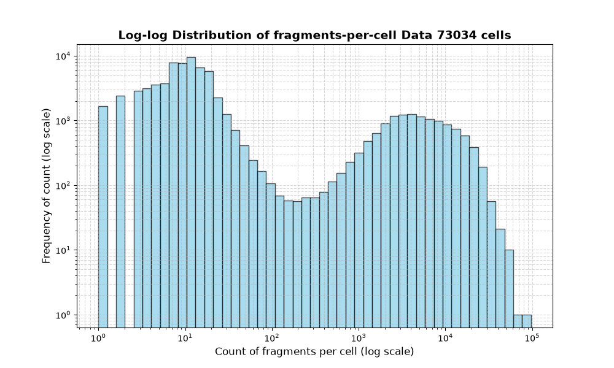
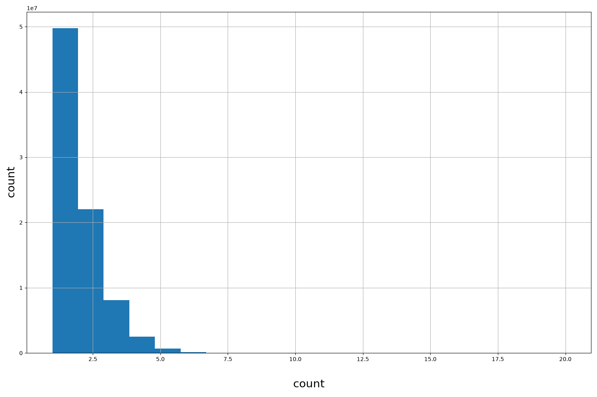
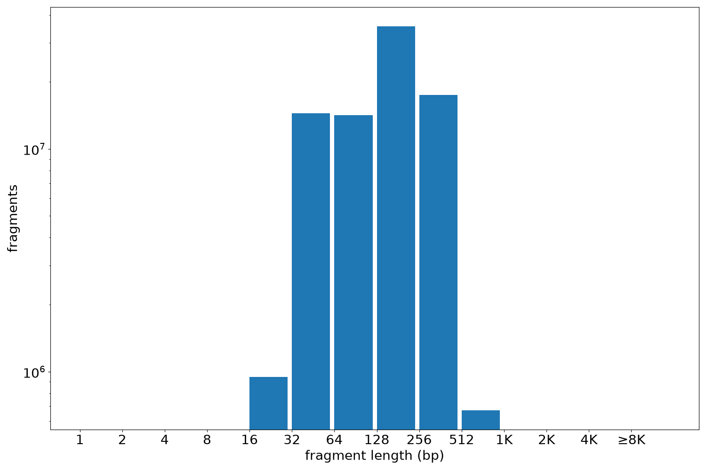

Resource
| Id | summary/zhang2021Singlecell/atac_fragments/GSM5589374 |
|---|---|
| Type | fragment_score |
| Version | 0 |
| Summary | Genome binding/occupancy profiling by high throughput sequencing/heart_lv_SM-JF1NY |
| Description | |
| Labels |
|
Scores (2)
| ID | Type | Default annotation | Description | Histogram | Range | Summary |
|---|---|---|---|---|---|---|
| cell | str |
cell |
 |
AAGTCCTTAGGGGCTCCGAATA, CGTCTGGACTCTCCCGTGTAAG, GGTGACATACGCTAGCTAGGAT, CCAAGGTGATAGTCCTGGTACT, CGTCTGGACTACGTCGAGTCCA (top 5 of 73034 values) | ||
| count | int |
count |
 |
[1, 13] |
|
n counts fragments; sd is the population standard deviation.
Fragments
| Chromosome | Fragments |
|---|---|
| all chromosomes | 83324517 |
| chr1 | 6889097 |
| chr2 | 6678561 |
| chr3 | 5899874 |
| chr4 | 5336463 |
| chr5 | 5008428 |
| chr6 | 5032599 |
| chr7 | 4390331 |
| chr8 | 4016102 |
| chr9 | 3282540 |
| chr10 | 3807651 |
| chr11 | 3885896 |
| chr12 | 3911189 |
| chr13 | 2692319 |
| chr14 | 2480844 |
| chr15 | 2421980 |
| chr16 | 2133366 |
| chr17 | 2546806 |
| chr18 | 2171416 |
| chr19 | 1749880 |
| chr20 | 1736238 |
| chr21 | 945748 |
| chr22 | 1095693 |
| chrM | 2771588 |
| chrX | 2332043 |
| chrY | 6893 |
| GL000008.2 | 1118 |
| GL000009.2 | 577 |
| GL000194.1 | 836 |
| GL000195.1 | 2422 |
| GL000205.2 | 4162 |
| GL000208.1 | 746 |
| GL000213.1 | 61 |
| GL000214.1 | 177 |
| GL000216.2 | 2091 |
| GL000218.1 | 1623 |
| GL000219.1 | 7262 |
| GL000220.1 | 234 |
| GL000221.1 | 157 |
| GL000224.1 | 1413 |
| GL000225.1 | 6097 |
| KI270302.1 | 2 |
| KI270303.1 | 3 |
| KI270304.1 | 1 |
| KI270305.1 | 1 |
| KI270310.1 | 1 |
| KI270311.1 | 16 |
| KI270315.1 | 1 |
| KI270320.1 | 26 |
| KI270322.1 | 10 |
| KI270330.1 | 14 |
| KI270333.1 | 885 |
| KI270336.1 | 215 |
| KI270337.1 | 529 |
| KI270362.1 | 11 |
| KI270363.1 | 4 |
| KI270366.1 | 5 |
| KI270378.1 | 2 |
| KI270382.1 | 1 |
| KI270383.1 | 1 |
| KI270384.1 | 1 |
| KI270392.1 | 1 |
| KI270393.1 | 3 |
| KI270395.1 | 8 |
| KI270396.1 | 2 |
| KI270411.1 | 6 |
| KI270414.1 | 2 |
| KI270417.1 | 16 |
| KI270418.1 | 6 |
| KI270419.1 | 5 |
| KI270420.1 | 15 |
| KI270422.1 | 2 |
| KI270423.1 | 2 |
| KI270424.1 | 1 |
| KI270429.1 | 22 |
| KI270435.1 | 1289 |
| KI270438.1 | 12030 |
| KI270442.1 | 8806 |
| KI270448.1 | 162 |
| KI270465.1 | 23 |
| KI270466.1 | 1328 |
| KI270467.1 | 7063 |
| KI270468.1 | 54 |
| KI270507.1 | 259 |
| KI270508.1 | 80 |
| KI270509.1 | 109 |
| KI270510.1 | 59 |
| KI270511.1 | 275 |
| KI270512.1 | 181 |
| KI270515.1 | 464 |
| KI270516.1 | 126 |
| KI270517.1 | 272 |
| KI270518.1 | 78 |
| KI270519.1 | 2455 |
| KI270521.1 | 48 |
| KI270522.1 | 28 |
| KI270529.1 | 5 |
| KI270530.1 | 3 |
| KI270538.1 | 1311 |
| KI270539.1 | 10 |
| KI270544.1 | 1 |
| KI270579.1 | 4 |
| KI270580.1 | 25 |
| KI270582.1 | 3 |
| KI270583.1 | 32 |
| KI270584.1 | 208 |
| KI270587.1 | 17 |
| KI270588.1 | 251 |
| KI270589.1 | 292 |
| KI270590.1 | 299 |
| KI270591.1 | 286 |
| KI270593.1 | 74 |
| KI270706.1 | 568 |
| KI270707.1 | 134 |
| KI270708.1 | 27 |
| KI270709.1 | 837 |
| KI270710.1 | 22 |
| KI270711.1 | 107 |
| KI270712.1 | 400 |
| KI270713.1 | 638 |
| KI270714.1 | 384 |
| KI270715.1 | 15 |
| KI270716.1 | 50 |
| KI270717.1 | 77 |
| KI270718.1 | 64 |
| KI270719.1 | 1008 |
| KI270720.1 | 490 |
| KI270721.1 | 79 |
| KI270722.1 | 190 |
| KI270723.1 | 432 |
| KI270724.1 | 111 |
| KI270725.1 | 767 |
| KI270726.1 | 185 |
| KI270727.1 | 215 |
| KI270728.1 | 1348 |
| KI270729.1 | 3127 |
| KI270730.1 | 570 |
| KI270731.1 | 22 |
| KI270732.1 | 531 |
| KI270733.1 | 5065 |
| KI270734.1 | 62 |
| KI270735.1 | 950 |
| KI270736.1 | 2858 |
| KI270737.1 | 123 |
| KI270738.1 | 405 |
| KI270739.1 | 8 |
| KI270741.1 | 26 |
| KI270742.1 | 558 |
| KI270743.1 | 729 |
| KI270744.1 | 1621 |
| KI270745.1 | 10 |
| KI270746.1 | 1044 |
| KI270747.1 | 128 |
| KI270748.1 | 5 |
| KI270749.1 | 703 |
| KI270750.1 | 2075 |
| KI270751.1 | 1495 |
| KI270753.1 | 97 |
| KI270754.1 | 214 |
| KI270755.1 | 58 |
| KI270756.1 | 195 |
| KI270757.1 | 1339 |
Fragment lengths
| fragments | min | max | mean | median | |
|---|---|---|---|---|---|
| fragments | 83324517 | 23 | 711 | 183.43 | 174 |

Files
| Filename | Size | md5 |
|---|---|---|
| GSM5589374_heart_lv_SM-JF1NY_rep1_fragments.bed.gz | 909.77 MB | d80d1c23caf151d1e7471abd86002ff3 |
| GSM5589374_heart_lv_SM-JF1NY_rep1_fragments.bed.gz.tbi | 736.78 KB | 77c52dad7122f6eab34714a23a7e8541 |
| fragment_count_dist_plot.py | 853.0 B | 9d735ee8c687286d50484e7f1e398e60 |
| genomic_resource.yaml | 1.3 KB | 2def1f9163f26d5ed521dcce9094e092 |
| statistics/ |